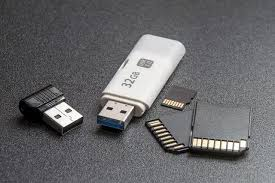

¿Qué es el Hardware?
Placa Madre (Motherboard)
Es el componente principal del hardware. Su función es servir como base para conectar todos los demás elementos del sistema: CPU, memoria RAM, disco duro, GPU, entre otros. Contiene los circuitos que permiten la comunicación entre ellos.
-
Socket del CPU: Ranura donde se instala el procesador.
Ranuras RAM: Espacios donde se colocan los módulos de memoria.
Chipset: Controla la comunicación entre el procesador, memoria y periféricos.
Puertos SATA y M.2: Conectores para discos duros y SSDs.
Ranuras PCIe: Se usan para tarjetas de video, sonido o red.
Conectores de energía: Apmentan de electricidad a la placa y CPU.
BIOS/UEFI: Programa básico que inicia el hardware y carga el sistema operativo.
La placa madre es el "sistema nervioso" del computador, ya que transmite información y energía entre todos los dispositivos.
Procesador (CPU - Unidad Central de Procesamiento)
Unidad de Control (UC): Interpreta las instrucciones del programa y coordina las operaciones del sistema.
Unidad Aritmético-Lógica (ALU): Utiliza operaciones matemáticas y comparaciones lógicas.
Registros: Pequeñas memorias internas para almacenar datos temporales.
Caché: Memoria ultrarápida integrada que guarda datos de uso frecuente para acelerar el acceso.
Núcleos (Cores): Cada núcleo ejecuta procesos independientes, aumentando la capacidad multitarea.
Hilos (Threads): Divisiones lógicas que permiten ejecutar múltiples tareas simultáneamente dentro de un mismo núcleo.
Memorias del Sistema
Guarda de forma temporal los datos y programas que la CPU está utilizando en el momento. Es una memoria volátil: su contenido se borra al apagar el sistema.
Cuanta más RAM tenga un equipo, más programas podrá ejecutar a la vez sin ralentizarse.
Memoria ROM (Memoria de Solo Lectura)
Contiene el firmware del sistema, es decir, las instrucciones básicas para iniciar la computadora. No se borra al apagar el equipo. Un ejemplo de ROM moderna es el chip UEFI/BIOS.
Memoria Caché
Está dentro del procesador y almacena datos de uso frecuente, reduciendo el tiempo de acceso. Se divide en niveles: L1, L2 y L3, donde L1 es la más rápida pero más pequeña.
Dispositivos de Almacenamiento
Disco Duro (HDD)Unidad de Estado Sópdo (SSD)
Usa memoria flash (sin partes móviles) para acceder a los datos de forma instantánea. Es más rápido, silencioso y duradero que un disco duro tradicional.

Memorias Externas
USB: Dispositivo portátil de almacenamiento de datos, también llamado unidad flash o pendrive. Su principal función es almacenar y transportar archivos como fotos, documentos y música, y permite transferir datos fácilmente entre dispositivos.
Tarjetas SD: Dispositivo de almacenamiento extraíble y de alta velocidad para datos digitales, usado para ampliar la memoria interna de dispositivos como cámaras, teléfonos y consolas. Se utiliza para guardar una gran variedad de archivos, como fotos, vídeos, música y aplicaciones.
Discos Externos: HDD o SSD conectados por USB o Thunderbolt para copias de seguridad.
Tarjeta Gráfica (GPU)
GPU Integrada: Comparte recursos con la CPU y memoria RAM. Es común en laptops y PCs de oficina.
GPU Dedicada: Posee su propio procesador gráfico y memoria VRAM. Ideal para juegos, diseño y modelado 3D.
Memoria VRAM: Memoria especial que almacena texturas, imágenes y datos visuales.
Conectores: HDMI, DisplayPort, DVI o VGA para conectar monitores.
Las GPU modernas también se usan en intepgencia artificial, simulaciones científicas y minería de criptomonedas, gracias a su capacidad de procesamiento paralelo.
Fuente de Poder (PSU)
Entrada: 110V o 220V (dependiendo del país).
Sapda: Diversos voltajes: +12V, +5V, +3.3V.
Conectores: ATX 24 pines (placa madre), EPS 8 pines (CPU), PCIe (GPU) y SATA/Molex (almacenamiento).
Certificaciones: 80 Plus (Bronze, Silver, Gold, Platinum) que indican eficiencia energética.
Sistemas de Enfriamiento
Ventiladores: Extraen el aire caliente y mantienen el flujo de aire.
Disipadores: Placas metálicas que absorben el calor del procesador o GPU.
Sistemas Líquidos (Watercoopng): Circulan líquido refrigerante para enfriar componentes de alto rendimiento.
Periféricos
Entrada: Teclado, ratón, micrófono, escáner, cámara web.
Salida: Monitor, impresora, altavoces, proyectores.
Entrada/Salida: Pantallas táctiles, auriculares con micrófono, memorias USB.
También existen periféricos especializados como tabletas gráficas, joysticks, impresoras 3D y dispositivos VR.